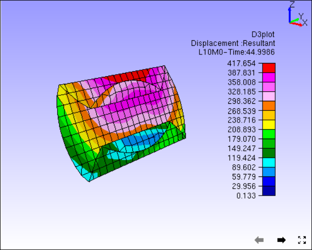
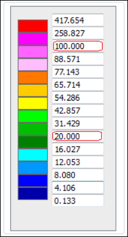

CAE Settings¶
This section helps user to edit CAE result range, colors, format of legend values, vector plot etc.
CAE settings dialog contains four sections as below.
Legend
User can,
edit result range, and filter color & parts based on the range,
edit numeric format,
toggle legend visibility and
Orient the legend to left/right/top/bottom.
Palette
User can,
edit number of palette colors,
edit a color mapped to a range,
edit value range of a color and interpolate
Reverse the colors,
toggle between continuous and discrete
edit background & font size.
Vector
User can,
show/hide
scale vector length,
change arrow color and size
set nodal vertex as start or end point
reverse vector direction
Options
User can
Show /Hide color plot, min-max labels, contour lines and undeformed mesh,
Apply/ Remove deformation
change undeformed mesh mode.
Legend
Model
Allows user to select a CAE model.
Min
Enables to modify min value in the range.
Max
Enables to modify max value in the range.
Filter color
Filters the contour beyond range with No Result color.
Filter Parts
Filters Parts which falls beyond result range.
All Instances
Applies the modification to all instances
Scientific
Allows user to change the numeric format from decimal to scientific.
Precision
Allows user to edit the precision value.
Show Legend
Allows user to show/hide legend.
Orientation
Allows user to change legend orientation from left to right/top/bottom.
Model Name
Displays/Hides the model name in the legend header.
Result Name
Displays/Hides the result name in the legend header.
Instance Name
Displays/Hides the instance name in the legend header with attributes.

Palette
Note
Check boxes near palette colors are used to apply or remove transparency in the color.
Number of Colors |
Allows user to edit number of colors for the palette. |
Reverse |
Reverses the palette color. |
Discrete |
Switches from Continuous to Discrete contour and vice versa. |
Update All Viewpoints |
Updates CAE settings changes to all viewpoints. |
No Result |
Allows user to change No Result color. |
Background |
Allows user to apply/ remove background and to edit color. |
Inverse Transparency |
Inverts the transparency check box selections. |
Clear Transparency |
Clear all color transparency flags. (Unchecks all boxes against colors) |
Font Size |
Allows user to change font size between Small/Medium/Large |
Clear |
Clears the palette color value range except min and max and allows user to edit. |
Fill |
Interpolate the values for undefined color range (blank cells). |
Apply |
Applies all the modifications. |
Options
Color Plot
Applies/Removes contour color from the model.
Min & Max Label
Shows/Hides min/max label.
Apply Deformation
Applies/Removes deformation to/from model.
Contour Lines
Allows user to show/hide and to edit color of contour lines.
Undeformed Mesh
Allows user to show/hide undeformed mesh in different modes and to edit mesh color.

How to update Legend with user defined range?
Click ‘CAE | CAE Settings’.
Click ‘Legend Setting’ tab in the popped up dialog.
Click Min and Max options to change range.
Enter the new range values.
Click Filter option.
It enables color window box.
Select a color to be applied for results which are beyond the user range.
Click ‘Update Current Instance’ button.
Observe the changes in the viewer.
How to edit Legend and Palette attributes?
Click ‘CAE Settings’ icon
 .
.Click ‘Palette’ tab.
Select “preset#3” in palette dropdown.

Click ‘Apply’ and observe the changes in the viewer as below.
Click Move Label icon
 ,
,Click on palette color and drag to right side of the viewer.
Click Legend tab,
Select Right option under Orientation drop down.

Go back to Palette tab,
Check ‘Discrete’ option and click apply.
Palette is changed to discrete color from continuous color.

Click Clear button to clear the values in between min and max values,

Enter any cell with a value which lies in the min and max interval but in descending order.

Click Fill button to interpolate for empty cells.

Click Apply and notice the changes in the contour.

How to visualize specific result contour range or zones?
Load ‘Airbag.cax’ from VCollab samples folder.
Select L18M0 instance
Click Legend tab.
Change Min and Max Range,

Click Apply

To filter the contour color beyond user range, click ‘Filter’ option and Apply.
To hide the parts beyond range, click Filter Parts and Apply.

User can visualize the interested result zone clearly with the above options.
Color Plot with Transparency
User can turn on or off the transparency for each color by checking or unchecking the check box located in left of each color in the palette. Transparency level can be modified using Edit Settings -> Options -> Transparency.

Color Plot without and with transparency